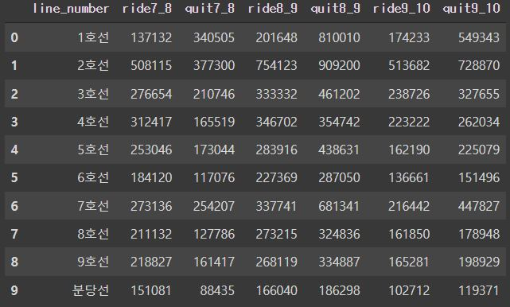
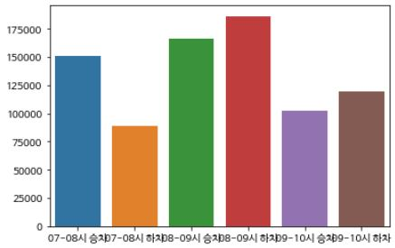
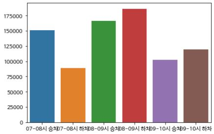

Frontend & BigData
MFC프로그래밍을 경험하고 웹/앱 개발자로 넘어오면서, Youtube에 동영상 강의가 많고 구글링할 정보가 많은 frontend를 선택하게 되었습니다.
그러면서 기존에 복수전공으로 하고 있던 스마트자동차공학과 전공을 포기하고, 다른 웹/앱 개발과 관련된 복수전공을 찾아보았습니다.
그 중, frontend와 가장 적합할 것 같은 빅데이터 복수전공을 신청했고, 그 이유는 frontend 개발을 하면서 사용자들의 방문 데이터등을 집계하고 해석해 시각화를
하면 효율적일것 같다는 생각에서 신청을 하게 되었습니다.
DB설계와 시각화
빅데이터 전공을 시작하면서 DB를 설계하고 데이터를 시각화하는 것을 학습했습니다.
DataBase를 배우면서 MySQL을 통해 버스회사에 대한 DB를 만들고 그 안에 데이터를 삽입,삭제, 생성, 읽기등을 구현하면서 DB의 구조에 대해 학습을 했고 이를 활용해 데이터 분석을 해봤습니다.
DB에 대해 학습을 한 이후 데이터 시각화 프로젝트 를 수행했고,
이때, 공공데이터포털에서 서울시 지하철 시간대별 승하차 인원 데이터를 시각화를 해보면서 python을 사용해 DB를 생성,연결 해서 데이터를 DB에 삽입,삭제, 갱신, 조회를 하면서 데이터를 분석, 시각화를 했습니다.

 

첫 번째 사진은 엑셀파일에서 각 호선별로 7시부터 10시 사이 승하차 인원 데이터를 추출해서 DB에 넣은 결과이고,
두 번째 사진은 모든 노선의 승하차 인원을 총합해서 그래프로 나타낸 결과입니다. 그래프를 보면 8시부터 9시사이 승차인원과 하차인원이 가장 많은 것을 볼 수 있고,
7시부터 8시 사이 승차인원이 하차인원보다 많은 것을 보면 출근시간에 지하철을 1시간 이상 타는 직장인이 있는 것을 확인할수 있었습니다.
마지막 사진은 10개의 노선중 분당선의 출근시간 승하차 인원을 분석한 그래프입니다.
데이터 시각화를 학습하면서 웹/앱 개발을 할 때, 화면 배치에 따른 사용자들의 클릭수에 대한 데이터를 시각화해 더 사용자에게 효율적이고, 웹/앱에서 중요한 광고 노출 효과를 확인할 수 있는 필요한 기술이라 생각했습니다.